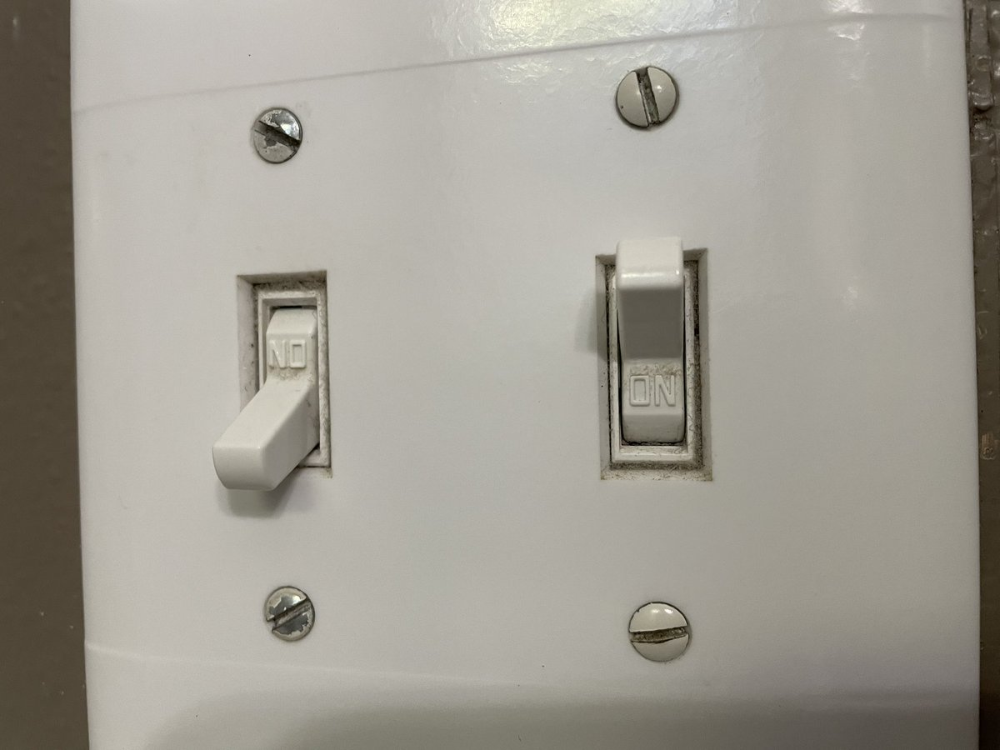

  	<div class="flex-wrap">
      
  	  <article class="tweet  " id="main">
  	    <p class="full_text">
  	      Did you know if you simply install your switch upside down, it can tell you NO instead of ON?<br><br>Even better, do this to only one in a pair of switches, they’ll mismatch if you want both lights on.<br><br>Enjoy trolling future occupants with this one neat trick!💡💡💡🤯 <div class="gallery"><ul><li><a href="../../tweets_media/1562584717152555008-Fa9qgvsUcAAn2do.jpg"></a></li></ul></div>
  	    </p>
  	    <p class="created_at">
  	      8/24/2022, 4:36:42 PM
  	    </p>
  	    <p class="favorite_count">Favs: 3</p>
  	    <p class="retweet_count">Retweets: 0</p>
  	    <a class="permalink" href="../1562584717152555008">link</a>
  	  </article>

  	</div>
  </div>
